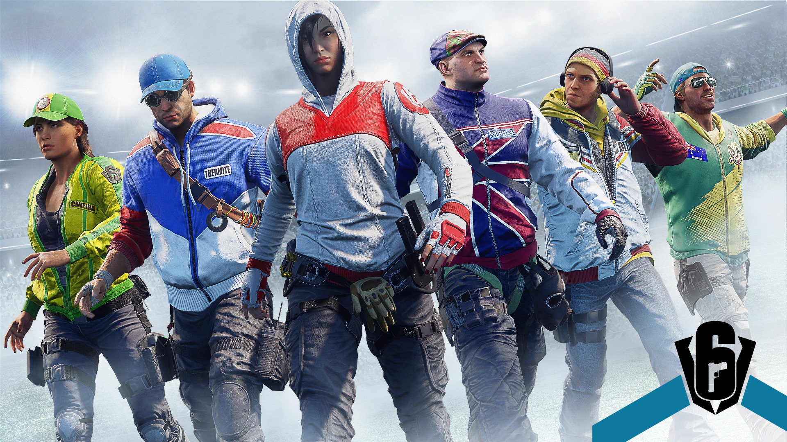
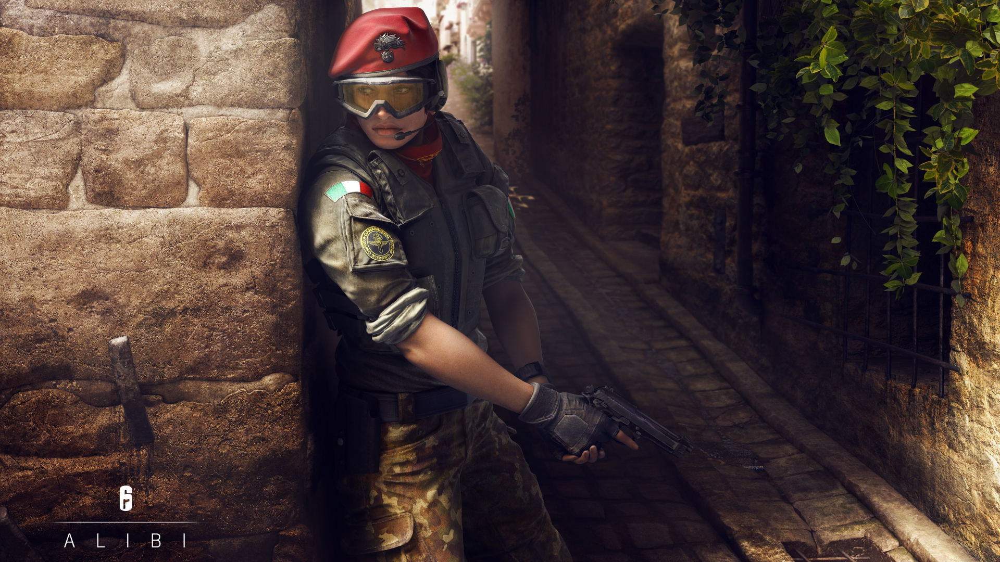
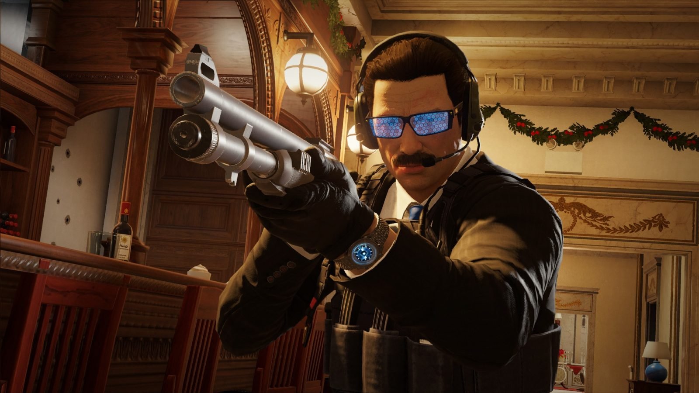

Perkenalan

Tom Clancy's Rainbow Six Siege adalah permainan tembak menembak dari sudut pandang orang pertama yang dikembangkan oleh Ubisoft Montreal dan diterbitkan oleh Ubisoft.dirilis di seluruh dunia untuk Microsoft Windows, PlayStation 4, dan Xbox One pada 1 Desember 2015. Permainan ini sangat menekankan pada kerja sama antar pemain. Setiap pemain mengambil kendali sebagai operator pada tim penyerang atau tim bertahan dalam mode permainan yang berbeda seperti menyelamatkan sandera, menjinakkan bom, dan mengambil kendali atas suatu tujuan di dalam ruangan.
Tiap operator memiliki kebangsaan, senjata, dan gadget yang berbeda. Hal tersebut berdasarkan unit anti teroris asal mereka, seperti FBI SWAT amerika, SAS Inggris, GSG-9 Jerman, Spetsnaz Rusia dan GIGN Prancis.
Alibi

Biografi
Aria "Alibi" de Luca lahir di Tripoli, Libya dan berimigrasi dengan keluarganya ketika dia berusia tiga tahun. Ayahnya mengelola pabrik persenjataan kecil, menggunakan kontak luasnya di Afrika Utara untuk membuka ekspor ke wilayah itu. De Luca mendapatkan pemahaman dan penggunaan senjata api Italia-nya melalui bisnis keluarga dan pelatihan tentang jarak tembak. Pada usia 18, Aria memasuki Kejuaraan Eropa yang diselenggarakan oleh Konfederasi Penembakan Eropa, dan memenangkan emas di target lari 10 meter dan divisi pistol udara 10 meter. Setelah acara tersebut, seorang perekrut Carabinieri meyakinkannya untuk bergabung dengan kepolisian. Keahlian menembak dan profesionalisme De Luca yang presisi menjadikannya naik pangkat dengan cepat, dan ia bekerja untuk waktu yang lama bersama Raggruppamento Operativo Speciale yang elit dalam memerangi kejahatan terorganisir.
De Luca akhirnya mendapat tempat di Gruppo Intervento Speciale (G.I.S.) yang bergengsi, dan setelah operasi yang sukses di Afghanistan meskipun terpisah dari unitnya, ia dipilih untuk pekerjaan yang menyamar dalam kejahatan terorganisir. Dia menyusup ke Keluarga Kejahatan Vinciguerra sebagai pedagang senjata dan menghabiskan beberapa tahun di antara mereka sebelum menghancurkan mereka dari dalam. Kebocoran koran tentang operasi yang akan dilakukan terhadap Vinciguerras kemudian memaksa G.I.S. untuk mempercepat inisiatif mereka. Setelah pekerjaannya yang menyamar dan keberhasilan pembongkaran Keluarga Kejahatan Vinciguerra, Aria de Luca menerima undangan untuk bergabung dengan Rainbow sebagai operator yang cakap.
Warden

Biografi
Collinn McKinley mendaftarkan diri di Korps Marinir pada usia 18 tahun dan mendapatkan beberapa pujian dalam layanannya karena proses berpikir cepat dan agresifnya, hingga membuatnya menjadi Sersan Utama meskipun ada beberapa pelanggaran kecil dalam catatannya. Setelah tur ketiganya, dia meninggalkan Marinir dan memasuki Secret Service dengan tertutup. Kelincahan McKinley berperan penting dalam menyelamatkan hidup Menteri Luar Negeri Baldwin ketika para pemberontak menyerang diplomatik AS. Baldwin kemudian memenangkan pemilihan presiden AS dan meminta McKinley ditugaskan ke Divisi Perlindungan Presiden. McKinley telah menghabiskan lebih dari satu dekade di Washington, melindungi para tokoh politik penting. Dia adalah pakar terkemuka dalam perincian perlindungan ketat, dan bersama Presiden Baldwin menyelesaikan masa jabatan keduanya, McKinley telah menerima dukungan tinggi untuk transisinya ke Rainbow.